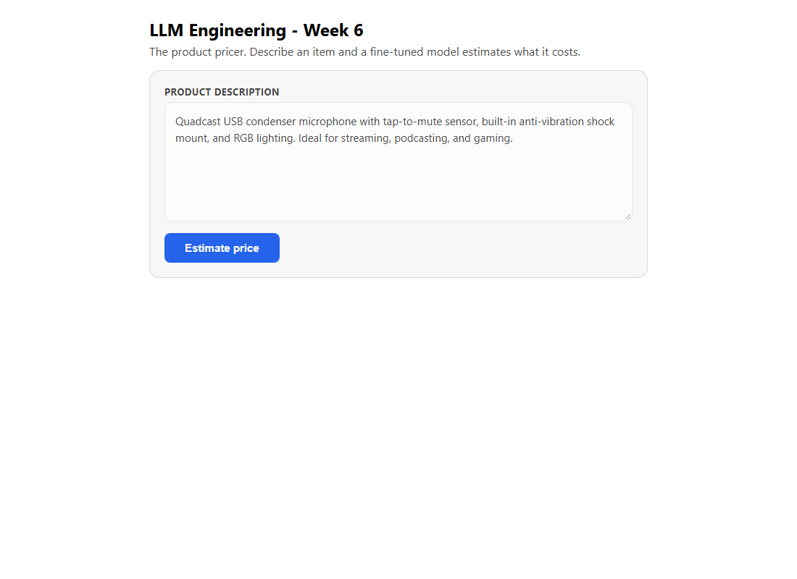

Week 7 · Day 5 — Does It Beat the Frontier?
Load the fine-tuned adapter, evaluate it on the test set, and compare the open-source result head-to-head with the frontier models and the baselines.
Companion to Ed Donner's course · uv setup · Python + TypeScript/React · code verified against the repoThis is the moment the whole week has been building towards. You have quantized a big open-source model down to 4 bits, attached tiny trainable LoRA adapters, and let them train overnight on product descriptions and prices. Today you put the finished model to the test: you load the trained adapter on top of the 4-bit base, run the model over the test set it has never seen, read a price out of each reply, score the average error, and line it up against the frontier models and the Week 6 baselines. The payoff is remarkable - a small, free, fine-tuned open-source model that beats a trillion-parameter frontier model at this one narrow job, for a fraction of the cost.
Loading the model has two halves. First you rebuild the exact 4-bit base model from Week 7 Day 1
(meta-llama/Meta-Llama-3.1-8B with the same quantization settings). Then you load the trained
adapter on top of it with PeftModel.from_pretrained. The base weights stay frozen; only the
~109MB of adapter weights are new. Together they are your fine-tuned pricer.
New to loading a PEFT adapter? What "base plus adapter" means
During training (Days 3-4) you never changed the 8-billion-parameter base model - that would need far too much memory and money. Instead PEFT (Parameter-Efficient Fine-Tuning, the Hugging Face library that implements LoRA) trained small side matrices called adapters and saved only those. So your fine-tuned model is not one big file - it is the original public base model plus a small adapter file.PeftModel.from_pretrained(base_model, adapter_name) takes a base model you have already loaded and
wraps it so the adapter weights are applied on top. That is why the memory footprint only grows from about
5.6GB (the 4-bit base) to about 5.7GB (base + adapter) - the adapter really is tiny.Running the model and reading a price
Each test item is a product description ending in the words Price is $. You feed that text to
the model and ask it to generate the next few tokens; the model writes the number. A small helper,
extract_price, pulls that number back out of the generated string. This is ordinary
inference - light enough to run on a cheap GPU, since there is no training today.
New to inference with a fine-tuned model? How prediction works here
Inference means running the model forward to get an answer, with the weights fixed. You callmodel.generate(inputs, max_new_tokens=4) and it continues the text. Because the price always comes
right after Price is $, you only need a handful of new tokens. The course takes advantage of a
lucky fact about Llama 3.1: every whole number from 1 to 999 is a single token, so one token is usually enough
to name the price. You then decode the tokens back to text and run extract_price to turn
"Price is $89.00" into the number 89.0.The top-token weighted-average trick
The simple model_predict just takes the model's single most likely next token and reads it as
the price. The course then shows a smarter improved_model_predict. Pricing is really a
regression problem (predict a number) that we have dressed up as a classification problem (pick the
next token). So instead of trusting only the top token, this version looks at the top three most likely price
tokens and takes a weighted average of them, weighted by the model's own probabilities. It squeezes out a
little more accuracy and can predict in-between values like $90.50.
New to the weighted-average trick? Why softmax and top-k help
The last layer of the network does not output one token - it outputs a logit (a raw score) for every token in the vocabulary. Run those scores throughsoftmax and they become probabilities that add
up to 1. The instructor explains it like this: the model might say $100 is most likely, with $99 and $101 close
behind. Taking only the single top token throws away that nuance. By reading the top three price tokens and
averaging their numbers using the probabilities as weights, you get an estimate that can land between whole
numbers and reflects how sure the model was. It only helps a little here, but it is a neat illustration of what
those final layers actually produce.Scoring and the head-to-head
The same Tester harness from earlier in the course runs the chosen predictor over 250 test
items. For each one it records the guess, the truth, the absolute error, and the squared log error, and colours
the result green, orange or red by how close it was. At the end it reports the average absolute error (dollars)
and the RMSLE, draws the scatter chart, and we drop the result
onto the podium next to the Week 6 baselines and the frontier models.
New to comparing against the frontier? What the podium measures
Across Weeks 6 and 7 every method is scored the same way: average how many dollars off its price guesses are across the test set. That single number lets very different approaches be compared on one podium - a constant-guess model, traditional machine learning, a human, big frontier models like GPT-4o, the untrained base Llama, and finally our fine-tuned model. Lower is better. The whole point of measuring the baselines and frontier first (Week 6) was to have a fair bar to judge fine-tuning against.Lesson by lesson
One section per video. Three of them are theory (how training works), and one notebook does the testing: the Google Colab notebook "Week 7 Day 5 - Testing our Fine-tuned model", which the course repository only links to. Its code was transcribed from the video; the Runs today tab swaps the 2024 version pins for the two in Ed's current Colab notebooks and fixes two small slips, each marked with a comment.
Video 28 · The four steps of training
Slides. What training actually does, repeated for every mini-batch and every epoch: (1) the forward pass, a prediction of the next token; (2) the loss, how wrong it was; (3) the backward pass (backpropagation), how sensitive the loss is to each weight, the gradients; (4) the optimization step, a small move of the weights in the direction that lowers the loss, scaled by the learning rate.
Video 29 · Training with QLoRA, in diagrams
Slides. The same four steps drawn for QLoRA: the 4-bit Llama 3.1 base is frozen, so the forward pass runs through it and the LoRA adapters, but the gradients and the updates only touch the adapter matrices.
Video 30 · Softmax and cross-entropy loss
Slides. The model does not output "the next token": its last layer outputs a score for every token in the vocabulary, and softmax turns those scores into probabilities. The loss (cross-entropy) only looks at the probability given to the token that was actually right: 100% would be perfect, and the lower it is, the bigger the loss. Predicting a price this way is a classification problem, which works well here.
Video 31 · Checking the run in Weights & Biases
In the browser, no new code. After a night of training the Day 3 notebook is past halfway through its epochs. In Weights & Biases the new run tracks an older run with the same settings almost exactly (same hyperparameters, same random seed), and the learning rate follows its cosine curve. On the Hub, the run's private repository has a commit for every 5,000 steps.
Video 32 · Revisiting the podium
Slides. The numbers to beat: constant average $146, linear regression $139, human $127, random forest $97, GPT-4o-mini $81, GPT-4o $76, and the untrained Llama 3.1 base $396. Keep in mind the sizes: GPT-4o has well over a trillion weights; our model is 8 billion 4-bit weights plus 109 MB of adapters, and free to run.
Video 33 · Testing the fine-tuned model
On a T4 box. Ed loads the 4-bit base model, puts the trained adapter on top with
PeftModel, picking the checkpoint from before overfitting, writes two prediction functions, and runs the
Tester over 250 test items.
# pip installs
!pip install -q datasets==2.21.0 peft requests torch bitsandbytes transformers==4.43.1 trl accelerate sentencepiece matplotlib
# imports
import os
import re
import math
from tqdm import tqdm
from google.colab import userdata
from huggingface_hub import login
import torch
import torch.nn.functional as F
import transformers
from transformers import AutoModelForCausalLM, AutoTokenizer, BitsAndBytesConfig, set_seed
from datasets import load_dataset, Dataset, DatasetDict
from datetime import datetime
from peft import PeftModel
import matplotlib.pyplot as plt
# Constants
BASE_MODEL = "meta-llama/Meta-Llama-3.1-8B"
PROJECT_NAME = "pricer"
HF_USER = "ed-donner" # your HF name here! Or use mine if you just want to reproduce my results.
# The run itself
RUN_NAME = "2024-09-13_13.04.39"
PROJECT_RUN_NAME = f"{PROJECT_NAME}-{RUN_NAME}"
REVISION = "e8d637df551603dc86cd7a1598a8f44af4d7ae36" # or REVISION = None
FINETUNED_MODEL = f"{HF_USER}/{PROJECT_RUN_NAME}"
# Uncomment this line if you wish to use my model
# FINETUNED_MODEL = f"ed-donner/{PROJECT_RUN_NAME}"
# Data
DATASET_NAME = f"{HF_USER}/pricer-data"
# Or just use the one I've uploaded
# DATASET_NAME = "ed-donner/pricer-data"
# Hyperparameters for QLoRA
QUANT_4_BIT = True
%matplotlib inline
# Used for writing to output in color
GREEN = "\033[92m"
YELLOW = "\033[93m"
RED = "\033[91m"
RESET = "\033[0m"
COLOR_MAP = {"red":RED, "orange": YELLOW, "green": GREEN}
# Log in to HuggingFace
hf_token = userdata.get('HF_TOKEN')
login(hf_token, add_to_git_credential=True)
dataset = load_dataset(DATASET_NAME)
train = dataset['train']
test = dataset['test']
train[0]
test[0]
# pick the right quantization
if QUANT_4_BIT:
quant_config = BitsAndBytesConfig(
load_in_4bit=True,
bnb_4bit_use_double_quant=True,
bnb_4bit_compute_dtype=torch.bfloat16,
bnb_4bit_quant_type="nf4"
)
else:
bnb_config = BitsAndBytesConfig(
load_in_8bit=True,
bnb_8bit_compute_dtype=torch.bfloat16
)
# Load the Tokenizer and the Model
tokenizer = AutoTokenizer.from_pretrained(BASE_MODEL, trust_remote_code=True)
tokenizer.pad_token = tokenizer.eos_token
tokenizer.padding_side = "right"
base_model = AutoModelForCausalLM.from_pretrained(
BASE_MODEL,
quantization_config=quant_config,
device_map="auto",
)
base_model.generation_config.pad_token_id = tokenizer.pad_token_id
# Load the fine-tuned model with PEFT
if REVISION:
fine_tuned_model = PeftModel.from_pretrained(base_model, FINETUNED_MODEL, revision=REVISION)
else:
fine_tuned_model = PeftModel.from_pretrained(base_model, FINETUNED_MODEL)
print(f"Memory footprint: {fine_tuned_model.get_memory_footprint() / 1e6:.1f} MB")
fine_tuned_model
def extract_price(s):
if "Price is $" in s:
contents = s.split("Price is $")[1]
contents = contents.replace(',','')
match = re.search(r"[-+]?\d*\.\d+|\d+", contents)
return float(match.group()) if match else 0
return 0
extract_price("Price is $a fabulous 899.99 or so")
# Original prediction function takes the most likely next token
def model_predict(prompt):
set_seed(42)
inputs = tokenizer.encode(prompt, return_tensors="pt").to("cuda")
attention_mask = torch.ones(inputs.shape, device="cuda")
outputs = fine_tuned_model.generate(inputs, attention_mask=attention_mask, max_new_tokens=3, num_return_sequences=1)
response = tokenizer.decode(outputs[0])
return extract_price(response)
# An improved prediction function takes a weighted average of the top 3 choices
# This code would be more complex if we couldn't take advantage of the fact
# That Llama generates 1 token for any 3 digit number
top_K = 3
def improved_model_predict(prompt, device="cuda"):
set_seed(42)
inputs = tokenizer.encode(prompt, return_tensors="pt").to(device)
attention_mask = torch.ones(inputs.shape, device=device)
with torch.no_grad():
outputs = fine_tuned_model(inputs, attention_mask=attention_mask)
next_token_logits = outputs.logits[:, -1, :].to('cpu')
next_token_probs = F.softmax(next_token_logits, dim=-1)
top_prob, top_token_id = next_token_probs.topk(top_K)
prices, weights = [], []
for i in range(top_K):
predicted_token = tokenizer.decode(top_token_id[0][i])
probability = top_prob[0][i]
try:
result = float(predicted_token)
except ValueError as e:
result = 0.0
if result > 0:
prices.append(result)
weights.append(probability)
if not prices:
return 0.0, 0.0
total = sum(weights)
weighted_prices = [price * weight / total for price, weight in zip(prices, weights)]
return sum(weighted_prices).item()
class Tester:
def __init__(self, predictor, data, title=None, size=250):
self.predictor = predictor
self.data = data
self.title = title or predictor.__name__.replace("_", " ").title()
self.size = size
self.guesses = []
self.truths = []
self.errors = []
self.sles = []
self.colors = []
def color_for(self, error, truth):
if error<40 or error/truth < 0.2:
return "green"
elif error<80 or error/truth < 0.4:
return "orange"
else:
return "red"
def run_datapoint(self, i):
datapoint = self.data[i]
guess = self.predictor(datapoint["text"])
truth = datapoint["price"]
error = abs(guess - truth)
log_error = math.log(truth+1) - math.log(guess+1)
sle = log_error ** 2
color = self.color_for(error, truth)
title = datapoint["text"].split("\n\n")[1][:20] + "..."
self.guesses.append(guess)
self.truths.append(truth)
self.errors.append(error)
self.sles.append(sle)
self.colors.append(color)
print(f"{COLOR_MAP[color]}{i+1}: Guess: ${guess:,.2f} Truth: ${truth:,.2f} Error: ${error:,.2f} SLE: {sle:,.2f} Item: {title}{RESET}")
def chart(self, title):
max_error = max(self.errors)
plt.figure(figsize=(12, 8))
max_val = max(max(self.truths), max(self.guesses))
plt.plot([0, max_val], [0, max_val], color='deepskyblue', lw=2, alpha=0.6)
plt.scatter(self.truths, self.guesses, s=3, c=self.colors)
plt.xlabel('Ground Truth')
plt.ylabel('Model Estimate')
plt.xlim(0, max_val)
plt.ylim(0, max_val)
plt.title(title)
plt.show()
def report(self):
average_error = sum(self.errors) / self.size
rmsle = math.sqrt(sum(self.sles) / self.size)
hits = sum(1 for color in self.colors if color=="green")
title = f"{self.title} Error=${average_error:,.2f} RMSLE={rmsle:,.2f} Hits={hits/self.size*100:.1f}%"
self.chart(title)
def run(self):
self.error = 0
for i in range(self.size):
self.run_datapoint(i)
self.report()
@classmethod
def test(cls, function, data):
cls(function, data).run()
Tester.test(improved_model_predict, test)# pip installs
# (the video pins the 2024 versions datasets==2.21.0 and transformers==4.43.1. Ed's current Colab
# notebooks keep Colab's own up-to-date libraries and pin only these two)
!pip install -q --upgrade bitsandbytes==0.48.2 trl==0.25.1
# imports
import os
import re
import math
from tqdm import tqdm
from google.colab import userdata
from huggingface_hub import login
import torch
import torch.nn.functional as F
import transformers
from transformers import AutoModelForCausalLM, AutoTokenizer, BitsAndBytesConfig, set_seed
from datasets import load_dataset, Dataset, DatasetDict
from datetime import datetime
from peft import PeftModel
import matplotlib.pyplot as plt
# Constants
BASE_MODEL = "meta-llama/Meta-Llama-3.1-8B"
PROJECT_NAME = "pricer"
HF_USER = "ed-donner" # your HF name here! Or use mine if you just want to reproduce my results.
# The run itself
RUN_NAME = "2024-09-13_13.04.39"
PROJECT_RUN_NAME = f"{PROJECT_NAME}-{RUN_NAME}"
REVISION = "e8d637df551603dc86cd7a1598a8f44af4d7ae36" # or REVISION = None
FINETUNED_MODEL = f"{HF_USER}/{PROJECT_RUN_NAME}"
# Uncomment this line if you wish to use my model
# FINETUNED_MODEL = f"ed-donner/{PROJECT_RUN_NAME}"
# Data
DATASET_NAME = f"{HF_USER}/pricer-data"
# Or just use the one I've uploaded
# DATASET_NAME = "ed-donner/pricer-data"
# Hyperparameters for QLoRA
QUANT_4_BIT = True
%matplotlib inline
# Used for writing to output in color
GREEN = "\033[92m"
YELLOW = "\033[93m"
RED = "\033[91m"
RESET = "\033[0m"
COLOR_MAP = {"red":RED, "orange": YELLOW, "green": GREEN}
# Log in to HuggingFace
hf_token = userdata.get('HF_TOKEN')
login(hf_token, add_to_git_credential=True)
dataset = load_dataset(DATASET_NAME)
train = dataset['train']
test = dataset['test']
train[0]
test[0]
# pick the right quantization
if QUANT_4_BIT:
quant_config = BitsAndBytesConfig(
load_in_4bit=True,
bnb_4bit_use_double_quant=True,
bnb_4bit_compute_dtype=torch.bfloat16,
bnb_4bit_quant_type="nf4"
)
else:
# (the video names this one bnb_config, so the 8-bit branch was never used by the model below;
# Ed later fixed it in the notebook. It only matters if you set QUANT_4_BIT = False.)
quant_config = BitsAndBytesConfig(
load_in_8bit=True,
bnb_8bit_compute_dtype=torch.bfloat16
)
# Load the Tokenizer and the Model
tokenizer = AutoTokenizer.from_pretrained(BASE_MODEL, trust_remote_code=True)
tokenizer.pad_token = tokenizer.eos_token
tokenizer.padding_side = "right"
base_model = AutoModelForCausalLM.from_pretrained(
BASE_MODEL,
quantization_config=quant_config,
device_map="auto",
)
base_model.generation_config.pad_token_id = tokenizer.pad_token_id
# Load the fine-tuned model with PEFT
if REVISION:
fine_tuned_model = PeftModel.from_pretrained(base_model, FINETUNED_MODEL, revision=REVISION)
else:
fine_tuned_model = PeftModel.from_pretrained(base_model, FINETUNED_MODEL)
print(f"Memory footprint: {fine_tuned_model.get_memory_footprint() / 1e6:.1f} MB")
fine_tuned_model
def extract_price(s):
if "Price is $" in s:
contents = s.split("Price is $")[1]
contents = contents.replace(',','')
match = re.search(r"[-+]?\d*\.\d+|\d+", contents)
return float(match.group()) if match else 0
return 0
extract_price("Price is $a fabulous 899.99 or so")
# Original prediction function takes the most likely next token
def model_predict(prompt):
set_seed(42)
inputs = tokenizer.encode(prompt, return_tensors="pt").to("cuda")
attention_mask = torch.ones(inputs.shape, device="cuda")
outputs = fine_tuned_model.generate(inputs, attention_mask=attention_mask, max_new_tokens=3, num_return_sequences=1)
response = tokenizer.decode(outputs[0])
return extract_price(response)
# An improved prediction function takes a weighted average of the top 3 choices
# This code would be more complex if we couldn't take advantage of the fact
# That Llama generates 1 token for any 3 digit number
top_K = 3
def improved_model_predict(prompt, device="cuda"):
set_seed(42)
inputs = tokenizer.encode(prompt, return_tensors="pt").to(device)
attention_mask = torch.ones(inputs.shape, device=device)
with torch.no_grad():
outputs = fine_tuned_model(inputs, attention_mask=attention_mask)
next_token_logits = outputs.logits[:, -1, :].to('cpu')
next_token_probs = F.softmax(next_token_logits, dim=-1)
top_prob, top_token_id = next_token_probs.topk(top_K)
prices, weights = [], []
for i in range(top_K):
predicted_token = tokenizer.decode(top_token_id[0][i])
probability = top_prob[0][i]
try:
result = float(predicted_token)
except ValueError as e:
result = 0.0
if result > 0:
prices.append(result)
weights.append(probability)
if not prices:
return 0.0 # the video returns 0.0, 0.0 (a pair), which the Tester cannot use as a price
total = sum(weights)
weighted_prices = [price * weight / total for price, weight in zip(prices, weights)]
# (the video ends with sum(weighted_prices).item(); float() gives the same number
# and lets a type checker see that the result is always a number)
return float(sum(weighted_prices))
class Tester:
def __init__(self, predictor, data, title=None, size=250):
self.predictor = predictor
self.data = data
self.title = title or predictor.__name__.replace("_", " ").title()
self.size = size
self.guesses = []
self.truths = []
self.errors = []
self.sles = []
self.colors = []
def color_for(self, error, truth):
if error<40 or error/truth < 0.2:
return "green"
elif error<80 or error/truth < 0.4:
return "orange"
else:
return "red"
def run_datapoint(self, i):
datapoint = self.data[i]
guess = self.predictor(datapoint["text"])
truth = datapoint["price"]
error = abs(guess - truth)
log_error = math.log(truth+1) - math.log(guess+1)
sle = log_error ** 2
color = self.color_for(error, truth)
title = datapoint["text"].split("\n\n")[1][:20] + "..."
self.guesses.append(guess)
self.truths.append(truth)
self.errors.append(error)
self.sles.append(sle)
self.colors.append(color)
print(f"{COLOR_MAP[color]}{i+1}: Guess: ${guess:,.2f} Truth: ${truth:,.2f} Error: ${error:,.2f} SLE: {sle:,.2f} Item: {title}{RESET}")
def chart(self, title):
max_error = max(self.errors)
plt.figure(figsize=(12, 8))
max_val = max(max(self.truths), max(self.guesses))
plt.plot([0, max_val], [0, max_val], color='deepskyblue', lw=2, alpha=0.6)
plt.scatter(self.truths, self.guesses, s=3, c=self.colors)
plt.xlabel('Ground Truth')
plt.ylabel('Model Estimate')
plt.xlim(0, max_val)
plt.ylim(0, max_val)
plt.title(title)
plt.show()
def report(self):
average_error = sum(self.errors) / self.size
rmsle = math.sqrt(sum(self.sles) / self.size)
hits = sum(1 for color in self.colors if color=="green")
title = f"{self.title} Error=${average_error:,.2f} RMSLE={rmsle:,.2f} Hits={hits/self.size*100:.1f}%"
self.chart(title)
def run(self):
self.error = 0
for i in range(self.size):
self.run_datapoint(i)
self.report()
@classmethod
def test(cls, function, data):
cls(function, data).run()
Tester.test(improved_model_predict, test)Line by line
Line numbers follow the As in the video block.
| Line(s) | Code | What it does & why |
|---|---|---|
| 1-3 | !pip install -q datasets==2.21.0 peft ... matplotlib | The usual installs. Ed is back on a cheap T4: testing is inference only, no training. |
| 7-20 | import torch.nn.functional as F / from peft import PeftModel … | Two imports matter today: F for softmax, and PeftModel to put the trained adapter on the base model. |
| 24-26 | BASE_MODEL / PROJECT_NAME / HF_USER = "ed-donner" | Your Hugging Face name, to test the model you trained, or keep Ed's: his model is public. |
| 30-33 | RUN_NAME = "2024-09-13_13.04.39" / REVISION = "e8d637df..." / FINETUNED_MODEL = ... | Which run and which checkpoint. That run is Ed's four-epoch run from Day 4; the REVISION is the Hub commit of the checkpoint saved at step 85,000, before it started to overfit badly. For your own run, use your run name and REVISION = None (the latest save). |
| 35-36 | # FINETUNED_MODEL = f"ed-donner/{PROJECT_RUN_NAME}" | Ed adds this during the video so you can switch to his model without changing HF_USER. |
| 40-42 | DATASET_NAME = f"{HF_USER}/pricer-data" | The same data (or your lite-data if you trained on appliances only). |
| 46-56 | QUANT_4_BIT = True … COLOR_MAP | 4-bit loading and the colours for the Tester. |
| 60-61 | login(...) | Hugging Face login; no Weights & Biases today. |
| 63-65 | dataset = load_dataset(DATASET_NAME) … | The test split is what matters today. |
| 67 | train[0] / test[0] | Ed checks again: the test text stops at Price is $; the price is only in the separate field, never given to the model. |
| 73-79 | if QUANT_4_BIT: quant_config = BitsAndBytesConfig(load_in_4bit=True, ...) | The same 4-bit settings as in training: the adapter was trained on this quantized model. |
| 80-84 | else: bnb_config = BitsAndBytesConfig(load_in_8bit=True, ...) | A small bug in the video: the 8-bit branch assigns bnb_config, a name nothing uses. Harmless with QUANT_4_BIT = True; fixed in the Runs today tab. |
| 88-97 | tokenizer = ... / base_model = AutoModelForCausalLM.from_pretrained(...) | The tokenizer and the 4-bit base model, as on Days 2 and 3. |
| 100-103 | fine_tuned_model = PeftModel.from_pretrained(base_model, FINETUNED_MODEL, revision=REVISION) | The new step. Load the adapter from the Hub and apply it on top of the base model. With a revision you get that exact checkpoint; without one, the latest. |
| 106 | print(f"Memory footprint: ... MB") | About 5,700 MB: the 5.6 GB base plus the 109 MB of LoRA matrices. |
| 108 | fine_tuned_model | The architecture, as in Day 1 Video 8: lora_A, lora_B and a 10% dropout in each target module. At the end, lm_head outputs one score (logit) per token in the vocabulary. |
| 110-116 | def extract_price(s): ... | The price parser from Day 2. |
| 118 | extract_price("Price is $a fabulous 899.99 or so") | Returns 899.99. |
| 122-128 | def model_predict(prompt): ... | Day 2's function, now calling the fine-tuned model and allowing up to 3 new tokens. |
| 134 | top_K = 3 | How many of the most likely next tokens to combine. |
| 136-139 | def improved_model_predict(prompt, device="cuda") | Instead of generating text, look at the probabilities of the next token directly. |
| 141-143 | outputs = fine_tuned_model(inputs, ...) / outputs.logits[:, -1, :] | One forward pass (no gradients needed for inference). logits holds a score for every vocabulary token at every position; [:, -1, :] keeps the scores for the token after the prompt's last one. |
| 145-146 | F.softmax(...) / .topk(top_K) | Softmax turns the scores into probabilities that add up to 1; topk keeps the 3 most likely tokens. |
| 147-157 | for i in range(top_K): ... | Decode each of the 3 tokens. Thanks to Llama's tokenizer each is a whole number like "99" or "100"; if it is not a number, it is skipped. Keep each price with its probability. |
| 158-159 | if not prices: return 0.0, 0.0 | If none of the three was a number, give up. (Returning a pair is a slip: the Tester expects one number. It almost never happens.) |
| 160-162 | weighted_prices = [price * weight / total ...] / return sum(weighted_prices).item() | The probability-weighted average of the three prices: if the model says $100 is most likely but $101 is close behind, the answer lands in between. It treats a regression problem (a number) that the model handles as classification (pick a token). .item() turns the one-number tensor into a Python float. |
| 164-175 | class Tester: / def __init__(self, predictor, data, title=None, size=250) | The Week 6 test harness, copied into this notebook. It stores the function to test (predictor), the dataset, a title (built from the function's name when none is given) and how many items to try (250), plus empty lists for every guess, truth, error, squared log error and colour. |
| 177-183 | def color_for(self, error, truth) | Green when the guess is within $40 or 20% of the truth, orange within $80 or 40%, red otherwise. |
| 185-199 | def run_datapoint(self, i) | Scores one test item. The one change from Week 6: a data point is now a row of the Hugging Face dataset, so the predictor gets datapoint["text"] (the prompt that ends at Price is $, never the price) and the truth comes from datapoint["price"]. The title is the first 20 characters of the product text. Each result is printed as one coloured line. |
| 201-212 | def chart(self, title) | A scatter plot of truth (x) against guess (y), with a blue diagonal where perfect guesses would sit. |
| 214-219 | def report(self) | Averages the dollar errors, computes the RMSLE and the share of green hits, and puts all three in the chart title. |
| 221-225 | def run(self) | Loops over the first 250 items, then reports. |
| 227-229 | @classmethod def test(cls, function, data) | The one-liner you call: Tester.test(some_predict_function, test). |
| 231 | Tester.test(improved_model_predict, test) | The moment of truth, with the improved function. The result is in the next video. |
Video 34 · The results: did we beat GPT-4o?
The output of the last cell, no new code. Mostly green lines, some orange, a few red, and the chart title: Improved Model Predict Error=$46.67 RMSLE=0.38 Hits=70.8%. The points hug the diagonal. A small, free, fine-tuned open-source model beats GPT-4o ($76) at this one task. Prices vary naturally (sales, missing information), so there is a floor on how low the error can go.
Video 35 · The final podium, and a challenge
Slides. Side by side: constant $146, linear regression $139, human $127, random forest $97, GPT-4o $76, our fine-tuned model $47. Ed's challenge: get it below $40 with hyperparameter tuning (r, alpha, learning rate, epochs, 8-bit instead of 4-bit), better data curation, or another base model, such as a 14-billion-parameter Phi-3. Next week: put it all into production.
Memory footprint: 5700 MB, the printed model shows lora_A and lora_B in each
attention layer, and extract_price("Price is $a fabulous 899.99 or so") returns 899.99.
The test run prints 250 coloured lines (mostly green, within $40 or 20%) and a scatter chart hugging the diagonal,
titled Improved Model Predict Error=$46.67 RMSLE=0.38 Hits=70.8%, against $76 for GPT-4o,
$127 for the human, $97 for Random Forest and $396 for the untrained base
Llama. (Figures from the video; the test needs a GPU and was not run here.)REVISION to pin that checkpoint, and use revision=None only if you want the
latest saved weights.week7/day5.ipynb, transcribed from the video and not run here (it needs a
GPU). The dollar numbers ($47, $76, $396 and so on) are the instructor's. Ed's newer re-recording links to a new Colab
notebook that tests a meta-llama/Llama-3.2-3B model trained on new prompt-and-completion data, so its
numbers differ. The base-model name, the run name and the revision are values you swap for your own. The Week 6
React pricer demo below does type-check and build; its live model call was not run.Try it in the demo
There is no separate Week 7 app - the finished fine-tuned model drives the same React pricer demo
you built in Week 6. Point its FINE_TUNED_MODEL setting (or the API it calls) at your fine-tuned
open-source model's endpoint, and the same form will show the open-source model's price estimates instead of
the frontier model's.
The setting is read in src/price.ts of week6-ts/ (line 21). Here is that file, so you don't need to go back to Week 6:
// Week 6 - The product pricer (TypeScript port of the inference core).
// Given a product description, ask a price-estimating model for a dollar amount
// and parse a number out of the reply.
//
// In the course you build traditional-ML baselines and then fine-tune a frontier
// model through OpenAI's fine-tuning API so it predicts a product's price from its
// description. That heavy lifting stays in Python; this module is only the thin
// inference call the demo UI makes. Point FINE_TUNED_MODEL at your fine-tuned model
// id once you have one; until then it falls back to gpt-4o-mini.
//
// Run with: npm run price -- "<a product description>" (needs OPENAI_API_KEY)
import "dotenv/config";
import { pathToFileURL } from "node:url";
import OpenAI from "openai";
// The model that estimates the price. Your fine-tuned model id goes in the env var;
// otherwise we use the base mini model so the demo still runs.
export const DEFAULT_MODEL = "gpt-4o-mini";
export function priceModel(): string {
return process.env.FINE_TUNED_MODEL || DEFAULT_MODEL;
}
// Same spirit as the lab: keep the model terse so the reply is easy to parse.
export const SYSTEM_PROMPT =
"You estimate the price of the item. Reply only with the price in dollars.";
export function userPromptFor(description: string): string {
return `How much does this item cost?\n\n${description}`;
}
// A clear error the server turns into a 400 and the CLI prints.
export class MissingKeyError extends Error {
constructor() {
super("OPENAI_API_KEY is not set");
this.name = "MissingKeyError";
}
}
// Pull the first number out of a reply like "The price is $19.99" or "$1,234.50".
// Strips currency symbols and thousands separators; returns NaN if there is no number.
export function parsePrice(text: string): number {
// Remove commas used as thousands separators (1,234.50 -> 1234.50).
const cleaned = text.replace(/,/g, "");
// First run of digits with an optional decimal part.
const match = cleaned.match(/-?\d+(?:\.\d+)?/);
if (!match) return NaN;
return Number(match[0]);
}
// --- the core: estimate a price for a product description --------------------
export async function estimatePrice(description: string): Promise<number> {
if (!process.env.OPENAI_API_KEY) throw new MissingKeyError();
const openai = new OpenAI(); // reads OPENAI_API_KEY
const completion = await openai.chat.completions.create({
model: priceModel(),
messages: [
{ role: "system", content: SYSTEM_PROMPT },
{ role: "user", content: userPromptFor(description) },
],
// Low ceiling: we only want a number back, not an essay.
max_tokens: 12,
temperature: 0,
});
const reply = completion.choices[0]?.message.content ?? "";
return parsePrice(reply);
}
// --- CLI entry point ----------------------------------------------------------
const SAMPLE_DESCRIPTION =
"Quadcast USB condenser microphone with tap-to-mute sensor, " +
"built-in anti-vibration shock mount, and RGB lighting. Ideal for " +
"streaming, podcasting, and gaming.";
async function main(): Promise<void> {
const description = process.argv.slice(2).join(" ").trim() || SAMPLE_DESCRIPTION;
if (!process.env.OPENAI_API_KEY) {
console.log(
`${new MissingKeyError().message} - this demo needs it. See .env.example.`,
);
return;
}
console.log(`Estimating with ${priceModel()}...\n`);
console.log(`Description: ${description}\n`);
const price = await estimatePrice(description);
console.log(`Estimated price: $${price.toFixed(2)}`);
}
// Only run when invoked directly (so the file is safe to import for its helpers).
if (import.meta.url === pathToFileURL(process.argv[1] ?? "").href) {
main().catch((err) => {
console.error(err);
process.exitCode = 1;
});
}
Week 7, wrapped up
This closes Week 7. You took a big open-source model, quantized it to 4 bits, attached small trainable LoRA adapters, trained them with fine-tuning on your pricing data, and today loaded the trained adapter back on top of the base to evaluate it. You can now carry out the full process of selecting, training and evaluating an open-source model that outperforms the frontier on a specialised task - a genuine milestone. Next week is the course finale: packaging and deploying what you have built behind an API as a real application.
- Load the fine-tuned model in two halves: rebuild the 4-bit base with the same
BitsAndBytesConfig, then attach the trained adapter withPeftModel.from_pretrained(base_model, FINETUNED_MODEL, revision=REVISION). - Pick the checkpoint from before overfitting (the instructor used the end of the third epoch) via
REVISION; the memory footprint growing from ~5.6GB to ~5.7GB confirms the ~109MB adapter loaded. - Predict by generating a few tokens and reading the number with
extract_price; the smarterimproved_model_predictaverages the top three price tokens weighted by their softmax probabilities for a slightly better estimate. - Score with the same
Testerharness (average absolute error and RMSLE) over the hidden test set - the model sees only the description, never the price. - Result: the fine-tuned open-source model reaches about $47 error, beating GPT-4o ($76), the human ($127), Random Forest ($97) and the untrained base Llama ($396) - a small, free model beating the frontier at a fraction of the cost.
- Honesty: the evaluation code was transcribed from the video (not run here - needs a GPU); the dollar figures are the course's. The Week 6 React demo type-checks and builds.